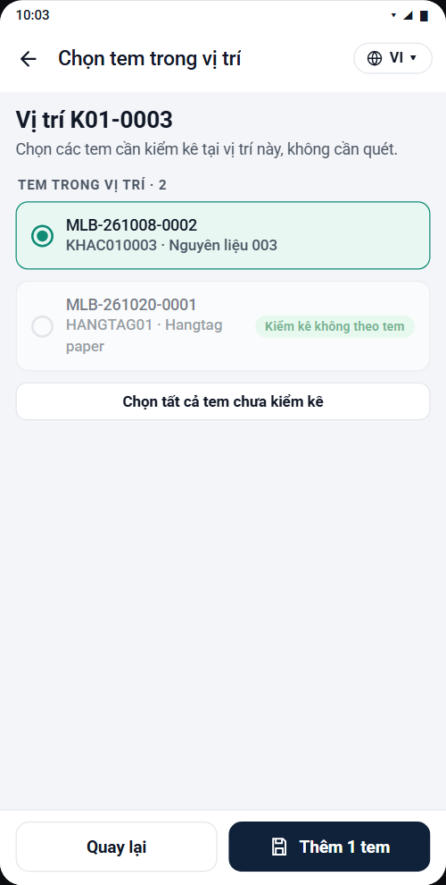
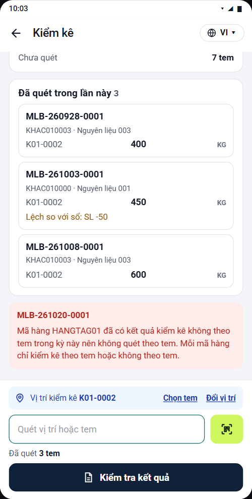
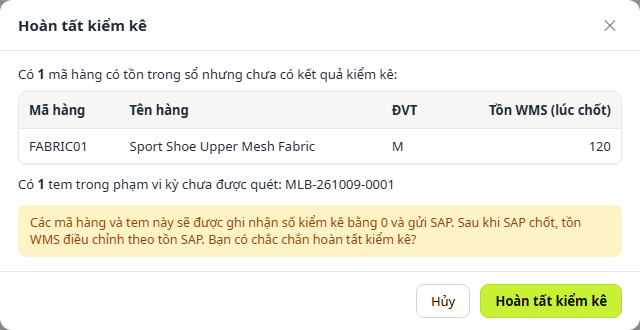
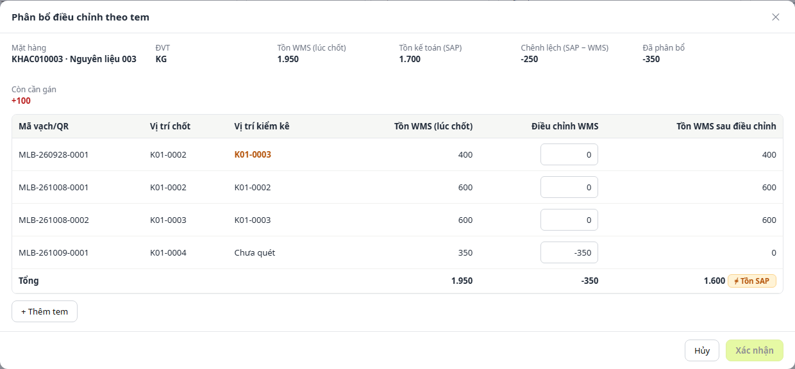

Ảnh chụp chi tiết · Danh sách kỳ kiểm kê. Số trên ảnh ứng với chú thích bên dưới
12345
1Bộ lọc: Ngày kiểm kê (từ ngày, đến ngày) và Kho; Đặt lại, Tìm kiếm.
2+ Tạo kỳ kiểm kê: mở hộp thoại tạo kỳ (ảnh dưới).
3Danh sách kỳ: Số kỳ kiểm kê, Kho, Ngày kiểm kê, Vị trí, Trạng thái. Bấm một dòng để xem chi tiết ở vùng 5.
4Thao tác ⋮: Sửa, Xóa. Kỳ đã đồng bộ SAP thì hai mục này bị khóa.
5Chi tiết kỳ kiểm kê: thông tin kỳ, số chốt tồn đã gắn (hoặc cảnh báo Chưa chốt tồn), nút Ghi nhận kết quả kiểm kê (9.4).
Ảnh chụp chi tiết · Hộp thoại Tạo kỳ kiểm kê. Số tiếp nối ảnh trên
6789
6Ngày kiểm kê, Kho: bắt buộc; ngày không được là ngày trong tương lai.
7Vị trí: Tất cả hoặc Chọn vị trí (tìm theo mã, chọn nhiều vị trí). Kho không theo dõi vị trí thì mặc định Tất cả.
8Ghi chú: tùy chọn.
9Tạo kỳ kiểm kê: WMS cấp số kỳ (CNT-năm-số thứ tự) và đặt trạng thái Đã tạo.
9.2Chốt số tồn kho
Điều chỉnh tồn kho › Chốt số tồn kho
Ảnh chụp chi tiết · Danh sách kỳ chốt tồn kho. Số trên ảnh ứng với chú thích bên dưới
1234
1Bộ lọc: Ngày chốt, Kho, Trạng thái (Đã chốt, Đã mở chốt).
2Nút thao tác: Giao dịch đang xử lý, Xuất Excel, Mở chốt (chọn một kỳ Đã chốt), Chốt tồn kho.
3Danh sách kỳ chốt: Số Closing, Ngày chốt, Kho, Vị trí, Trạng thái, Số dòng, Người chốt.
4Chi tiết ảnh chụp tồn kho: từng dòng tồn lúc chốt (mã hàng, mã vạch/QR, vị trí, số lượng). Kỳ đã mở chốt hiện lý do và người mở.
Ảnh chụp chi tiết · Hộp thoại Chốt tồn kho. Số tiếp nối ảnh trên
5678
5Ngày chốt, Kho: bắt buộc; ngày chốt không được là ngày trong tương lai.
6Vị trí: Tất cả hoặc Chọn vị trí.
7Giao dịch đang xử lý: số phiếu Đã lưu, Đã trình có ngày không muộn hơn ngày chốt; Xem chi tiết để mở danh sách.
8Chốt tồn: còn phiếu đang xử lý thì hiện cảnh báo, nút đổi thành Vẫn chốt.
9.3Quét tem kiểm kê
Ứng dụng PDA › Điều chỉnh tồn kho › Kiểm kê
Ảnh chụp theo từng bước thao tác. Kéo ngang để xem hết, bấm ảnh để phóng to
1Chọn kỳ kiểm kêDanh sách kỳ đang mở của kho: trạng thái, ngày, phạm vi vị trí, số tem đã kiểm và còn chưa quét. Bấm một kỳ để bắt đầu.2Quét vị trí và temThanh dưới hiện vị trí đang kiểm kê. Quét mã vị trí trước, rồi quét liên tiếp các tem trong vị trí đó. Muốn đổi vị trí, quét mã vị trí mới.3Nhập số lượng đã đếmMỗi tem quét xong hiện hộp xác nhận số lượng thực tế, đã điền sẵn số lượng theo sổ. Đếm khác thì sửa lại. Số phải lớn hơn 0.4Chọn vị trí kiểm kêQuét mã vị trí hoặc chọn trong danh sách vị trí thuộc phạm vi kỳ. Chọn trong danh sách thì mở tiếp danh sách tem của vị trí đó.

5Chọn tem trong vị tríDùng khi không quét được tem (ví dụ tem ở tầng cao). Tick các tem cần kiểm kê rồi bấm Thêm, số lượng điền sẵn theo sổ. Tem đã chọn, đã kiểm kê hoặc của mã hàng kiểm không theo tem hiển thị mờ.6Kiểm tra trước khi gửiTem gộp theo vị trí. Sửa số lượng ngay trên ô (điền sẵn theo sổ), bỏ tem bằng ✕, Đổi vị trí kiểm kê cho cả nhóm, rồi Gửi kết quả.7Đã gửi kết quảKết quả ghi vào kỳ kiểm kê. Bấm Quét tiếp để kiểm vị trí khác hoặc Kết quả đã gửi để xem lại.8Kết quả đã gửiDanh sách tem đã gửi của kỳ. Sửa vị trí, số lượng hoặc Xóa kết quả của một tem; tem lệch so với sổ hiện cảnh báo.!Ví dụ tem bị chặnThẻ đỏ ghi số tem và lý do, ví dụ tem không có trong hệ thống.

!Ví dụ mã hàng kiểm không theo temMã hàng đã có kết quả kiểm kê không theo tem trong kỳ thì không quét theo tem; mỗi mã hàng chỉ dùng một cách.
9.4Ghi nhận kết quả kiểm kê
Điều chỉnh tồn kho › Ghi nhận kết quả kiểm kê
Ảnh chụp chi tiết · Tab Kết quả theo tem. Số trên ảnh ứng với chú thích bên dưới
12345
1Chọn kỳ: Số kỳ kiểm kê, Kho, Ngày, Vị trí, Trạng thái và số Chốt tồn đã gắn. Chưa chốt tồn thì hiện cảnh báo.
2Ba tab: Kết quả theo tem, Nhập không theo tem, Tổng hợp theo mã hàng.
3+ Thêm tem: thêm tay kết quả cho một tem; số lượng điền sẵn theo SL chốt. Chặn nếu mã hàng đã có số không theo tem.
4Lọc theo trạng thái tem: Tất cả, Đã khớp, Chênh lệch số lượng, Sai lệch vị trí, Sai lệch kho, Chưa quét.
5Bảng kết quả: mã hàng, ĐVT, vị trí chốt và vị trí kiểm kê, SL chốt và SL kiểm kê; giá trị lệch tô đậm. Thao tác ⋮: Sửa, Xóa.
Ảnh chụp chi tiết · Tab Nhập không theo tem. Số tiếp nối ảnh trên
678
6Tải mẫu Excel, Import Excel: mẫu gồm 3 cột Kho, Mã hàng, Số lượng.
7Nhập từng dòng: gõ mã hoặc tên mặt hàng (số lượng không theo tem theo sổ được điền sẵn), nhập số lượng kiểm kê, bấm Thêm. Chặn nếu mã hàng đã có kết quả theo tem.
8Bảng dòng nhập: sửa số lượng ngay trên dòng, ✕ để xóa.
Ảnh chụp chi tiết · Tab Tổng hợp theo mã hàng. Số tiếp nối ảnh trên
9101112
9Bộ lọc: Mã hoặc tên mặt hàng; SAP đã chỉnh (Tất cả, Có, Không).
10Hoàn tất kiểm kê: chốt kết quả của kỳ; mã hàng và tem chưa kiểm được ghi nhận số kiểm kê bằng 0 (hộp thoại ảnh dưới).
11Đồng bộ SAP: chỉ bấm được sau khi hoàn tất; lỗi thì đổi thành Đồng bộ lại SAP.
12Bảng tổng hợp: Tồn WMS lúc chốt, Số kiểm kê, Chênh lệch, Tồn kế toán SAP, SAP đã chỉnh (Có kèm số lệch, hoặc Không), Đồng bộ SAP, Ghi chú.
Ảnh chụp chi tiết · Hộp thoại Hoàn tất kiểm kê. Số tiếp nối ảnh trên

1314
13Danh sách chưa kiểm: các mã hàng và tem chưa có kết quả; ghi chú “Chưa kiểm kê, ghi nhận bằng 0”. Không còn lựa chọn xử lý.
14Cảnh báo: các dòng này được ghi nhận bằng 0 và gửi SAP; sau khi SAP chốt, tồn WMS điều chỉnh theo tồn SAP.
9.5Điều chỉnh nhập/xuất tồn
Điều chỉnh tồn kho › Điều chỉnh nhập/xuất tồn
Ảnh chụp chi tiết · Tab Sai lệch kiểm kê. Số trên ảnh ứng với chú thích bên dưới
12345
1Bộ lọc: Số kỳ kiểm kê, Ngày kiểm kê, Kho, Vị trí, Loại sai lệch, Phiếu / Mã vạch / Mặt hàng.
2Thống kê: Sai lệch đang mở, Chờ duyệt, Đã duyệt, Đã hủy.
3Hai tab: Sai lệch kiểm kê, Phiếu điều chỉnh.
4Tạo phiếu điều chỉnh, Xuất dữ liệu: tạo phiếu từ các mã hàng đã tick; nếu phân bổ mặc định khác chênh lệch thì mở hộp thoại Phân bổ điều chỉnh theo tem (ảnh dưới).
5Bảng sai lệch: theo từng mã hàng, so tồn kế toán SAP với tồn WMS lúc chốt: Loại sai lệch (Chênh lệch số lượng, Sai vị trí), Trạng thái Chờ xử lý, Số kỳ, Mặt hàng, ĐVT, Tồn WMS, Tồn kế toán SAP, Chênh lệch (SAP − WMS), Hướng điều chỉnh, Ghi chú (Khớp kiểm kê hoặc Cần review tem).
Ảnh chụp chi tiết · Hộp thoại Phân bổ điều chỉnh theo tem. Số tiếp nối ảnh trên

678910
6Thông tin mã hàng: Tồn WMS, Tồn kế toán SAP và Chênh lệch cần phân bổ.
7Bảng phân bổ theo tem: mặc định tem đã quét nhận (SL kiểm kê − SL sổ), tem chưa quét nhận −SL sổ; sửa số điều chỉnh, vị trí ngay trên dòng.
8Dòng Tổng: tổng phân bổ phải bằng Chênh lệch (SAP − WMS) và tồn sau điều chỉnh không âm.
9+ Thêm tem: chọn tem chưa có tồn; mỗi dòng thêm cần vị trí và số lượng lớn hơn 0. Chưa có tem thì tạo ở Phát hành tem.
10Xác nhận: đóng hộp thoại và tiếp tục Lưu hoặc Trình duyệt phiếu.
Ảnh chụp chi tiết · Tab Phiếu điều chỉnh. Số tiếp nối ảnh trên
1112
11Danh sách phiếu: Số phiếu, Số kỳ, Loại sai lệch, Số dòng (mỗi dòng một tem), Kho, Trạng thái (Nháp, Chờ duyệt, Đã duyệt, Từ chối, Đã hủy), Người tạo, Ngày tạo.
12Thao tác ⋮: Xem, Sửa, Trình duyệt, Duyệt, Từ chối, Hủy phiếu; mục hiện theo trạng thái phiếu.
Ảnh chụp chi tiết · Xem phiếu điều chỉnh. Số tiếp nối ảnh trên
131415
13Thông tin phiếu: Kỳ kiểm kê, Kho, Trạng thái, Người tạo, Ngày điều chỉnh, Ghi chú.
14Chi tiết: từng tem với mã hàng, vị trí, tồn WMS, số điều chỉnh và tồn sau điều chỉnh.
15Lịch sử xử lý: thời gian, người làm, hành động và lý do.
 1
2
3
4
5
1
2
3
4
5
 6
7
8
9
6
7
8
9
 1
2
3
4
1
2
3
4
 5
6
7
8
5
6
7
8


 1
2
3
4
5
1
2
3
4
5
 6
7
8
6
7
8
 9
10
11
12
9
10
11
12
 1
2
3
4
5
1
2
3
4
5
 11
12
11
12
 13
14
15
13
14
15